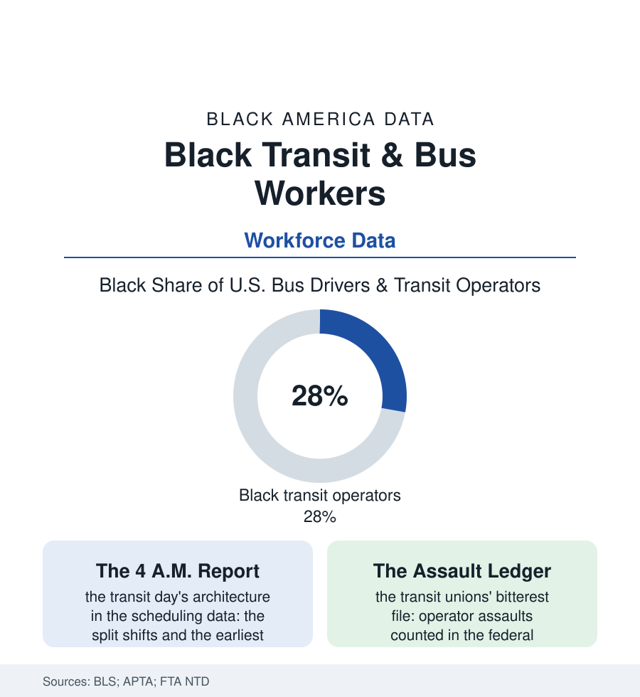

Black Employment
The People Who Drive the City: Black Transit Workers
Public transit runs on Black labor — the operators, mechanics, and station staff of the nation's buses and trains, in a workforce that is the public sector's bluest collar. The transit file.

The city wakes up already moved: before the first office lights, a workforce that is roughly a quarter to a third Black in the national data — bus operators, rail conductors, mechanics, cleaners, station agents — has pulled the buses out of the barn and opened the system. Public transit is among the most Black workplaces in the American public sector, and among its most physically exposed. This article reads the transit file.
The Job and Its Terms
Transit work carries the public sector's classic bargain in its most physical form: the union contract and the pension (the Amalgamated Transit Union and the Transport Workers among the labor movement's historic strongholds — their locals, in the big cities, among the first genuinely Black-led industrial unions in the North's labor data, the transit local as a civic institution of its own in the New Yorks and Chicagos of this atlas), the civil-service ladder from operator to dispatcher to superintendent, and the wage that anchors a working-class mortgage in every metro in the cities file. Against the bargain stand the terms the workforce data itemize without sentiment: the split shift (the operator's day torn in two by the rush hours, the four unpaid hours between pieces spent in the barn's rest room or a second job's shadow — a schedule architecture unique to transit, its fatigue management now a federal safety literature), the assault ledger (operator assaults in the thousands annually in the Federal Transit Administration's database, the operator as the system's public face and its shock absorber — the fare dispute, the service failure, the city's anger arriving at the plexiglass, the protective-barrier retrofits and the state assault statutes the unions' current legislative file), and the exposure rows the pandemic wrote largest (transit workers among the essential workforce's highest early mortality in the big-city counts — the New York transit union's death toll a civic trauma of its own — the sealed operator cabs and the rear-door boarding of that era now permanent entries in the safety standards). The system's place in Black history needs no embellishment in a data file: the bus was the movement's chosen stage precisely because of this workforce and its riders — the Montgomery boycott's leverage was the farebox of a Black-riding system, its carpool logistics run by the same community that staffed the alternatives.
The System's Crossroads
The workforce's future is bound to its industry's finances, and the transit fiscal data of the current decade are the file's anxiety: the farebox collapse of the pandemic era persisting in the ridership tables (the Black ridership of the bus systems — the transit-dependent households of the car-access file — riding at the highest retained rates even as the rail commuters vanished, the bus revealed, in the crisis data, as the essential network and the politically weakest), the service cuts' geometry threatening the workforce and the riders in the same neighborhoods twice over, and the automation horizon in the agencies' pilot programs (the driverless shuttle's demonstration loops against the operators' unions' legislative files in the statehouses — the warehouse file's race between organizing and automation, run on public rails with public money). The electrification transition writes the mechanics' chapter (the diesel craft retraining into the battery-electric fleet — the workforce development funds of the federal transit programs earmarking the transition's apprenticeships, the maintenance barn's skill ladder rebuilt exactly as the repair file's, with the public employer at least formally committed to carrying its own people across). The file's constants are civic: the transit workforce is the rare public body that its Black riders see as their own — the operator from the neighborhood, the union hall on the avenue — and the system's legitimacy in the communities it serves rides, in no small part, on that recognition, a political asset the agencies' own equity statements have learned to cite.
Reading the Transit Data
A quarter to a third of the people who move the cities, at 4 a.m., behind the plexiglass: the transit file is the employment section's portrait of public work at its most embodied — the pension and the split shift, the union card and the assault report, in one workforce. The transit database counts the operators. The city that arrives at work on time is their signature, renewed daily before dawn.
More in Black Employment
The Black Unemployment Rate: The Two-to-One Pattern
Black unemployment runs at roughly twice the White rate — 5.5 percent against 3.3 percent in annual averages — a ratio stable across five decades of federal data. How it is measured and why it persists.
Black Median Weekly Earnings: The 80-Cent Ratio
Black full-time workers earn a median of about $900 a week — roughly 80 cents for every dollar White workers earn. The BLS earnings data by group, gender, and occupation.
Black Labor Force Participation: Working at National Rates
Black labor force participation runs at roughly the national rate — and Black women participate at higher rates than White women. The BLS participation data.
Source: U.S. Bureau of Labor Statistics; American Public Transportation Association workforce data; Amalgamated Transit Union; Federal Transit Administration National Transit Database.